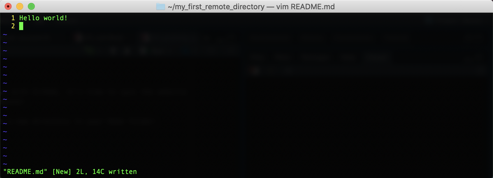

2 Version Control
After this lesson, you should be able to:
- Explain the purpose of using a version control system (VCS)
- Explain the difference between centralized and distributed version control
- Explain what a repository is
- Explain what Git is
- Initialize a Git repository
- Check the status of a Git repository
- Explain what the Git working tree and staging area are
- Inspect and stage changes to a Git repository
- Commit changes to a Git repository
- View the history of commits in a Git repository
- Restore an old version of a file from a commit
- Explain what GitHub is and how it relates to Git
- Create an SSH key in order to authenticate with GitHub
- Explain the difference between a local and remote repository
- Clone a remote repository (on GitHub) to your computer
- Push changes to a remote repository
- Pull changes from a remote repository
2.1 Introduction
Version control describes the process of storing and organizing multiple versions (or copies) of files on your computer. Approaches to version control range from simple to complex and they can involve the use of both manual and automatic workflows. Ultimately, the overall goal of version control is to store and manage multiple versions of the same file(s).
Chances are good that you are already doing some kind of version control yourself. Most people have a folder/directory somewhere on their computer that looks something like this:

Or perhaps, this:

This is a rudimentary form of version control where it’s completely up to you to name, save, and keep track of multiple versions of a file. This filesystem approach works minimally well, in that it does provide you with a history of file versions theoretically organized by their time sequence. But this system provides no information about how the file has changed from version to version, why you might have saved a particular version, or specifically how the various versions are related. This approach is also subject to human error. It’s easy to make a mistake when naming a file version, or to go back and edit a file without saving a new copy.
2.1.1 Version Control Systems
A version control system (VCS) is software designed to automate version control. Version control systems originated in the software development community, where it’s common for many people to work on the same file, sometimes synchronously, amplifying the need to track and understand revisions. But nearly all types of computer files, not just code, can be tracked using modern version control systems.
IBM’s OS/360 IEBUPDTE software update tool is widely regarded as the earliest and most widely adopted precursor to modern, version control systems. Its release in 1972 of the Source Code Control System (SCCS) package marked the first, fully fledged system designed specifically for software version control.
It’s common for projects to have multiple associated files, so most version control systems keep track of changes to a repository: a collection of files. Generally, a repository (or repo) is just a directory where you’ve set up a version control system to keep track of changes to the contents. A repository can contain any number of files and subdirectories.
It’s also common for people to collaborate on projects, so most version control systems provide a way to create multiple copies of a repository and share changes between them. Version control systems can be divided into two categories based on how they do this:
Centralized version control systems store the repository and its history on a single computer. This computer is usually a server, a computer connected to the Internet or some other network. Users can check out a copy of the repository from the server, make changes, and then check in their changes with the server. The server is the sole authority on the repository’s history. You can think of this as a “hub and spoke” model, where the server is the hub and users are the spokes. This is the oldest kind of version control system.
Distributed version control systems treat each copy of the repository as an authority on the repository’s history, and provide ways to sync changes and resolve conflicts between copies. As two different users make changes to their copies of the repository, the copies will diverge if both users edit the same file. The divergence will remain in place until the two copies are synced, at which time the VCS merges the two different versions of the file into a single version that reflects the changes made by both users. You can think of this as a “network” model (like a social network).

Centralized VCS provide a very ordered and controlled universe. They ensure users have access to the most recent version of every file in the repository, which reduces the potential for conflicting changes to files.
Early centralized version control systems typically required users to check out individual files or directories rather than entire repositories, and only allowed one user to check out a given file at time. This prevented conflicting edits, but made it difficult to work concurrently.
On the other hand, distributed VCS offer greater flexibility. They allow users to work alone or in small groups, work offline, or work on experimental changes over an extended period without losing the benefits of version control. These characteristics facilitate collaborative work. Moreover, a distributed VCS can be used in a centralized way, where one copy of the repository is treated as the final authority on the repository’s history. This gives users the best of both worlds, by allowing some to sync directly with each other while others sync with this authoritative copy.
Today, a distributed VCS, Git, is the most popular VCS. Some polls estimate that it’s used by more than 90% of all developers. A few other version control systems in use today include Mercurial, Subversion, Perforce, and Plastic SCM. Many document editors, such as Google Docs and Microsoft Word, also have built-in version control systems. Each of these systems offers a twist on version control, differing sometimes in the area of user functionality, sometimes in how they handle things on the back-end, and sometimes both. In this reader, we’ll focus on Git.
2.1.2 First-time Git Configuration
When you save changes to a repository, Git will automatically annotate the changes with your name and email. In collaborative projects, these annotations are important for determining who made which changes. Thus the first time you use Git, you need to set your name and email.
All Git commands begin with git and the name of a subcommand.
You can view the documentation for any subcommand by adding --help to the end. For instance, to get help with the git config subcommand used in the next example, run git config --help.
To set your name, open a terminal and type:
git config --global user.name "YOUR_NAME"Replace YOUR_NAME with your name or preferred alias. Then press Enter. To set your email, enter:
git config --global user.email "YOUR_EMAIL"Replace YOUR_EMAIL with your preferred public email address. Git is open-source, community-developed software, so it won’t share your email address with spammers, but your email address will be visible on any changes you make to public repositories.
Many developers configure Git to use their real name. This can be beneficial for ensuring you receive credit for any open-source or academic computing work you do while building your career.
If you’re not comfortable attaching your real name to work you do with Git, a reasonable alternative is to use an alias you control, such as your GitHub username. Section 2.5 explains more about GitHub.
Likewise, if you don’t want to attach your primary email address to work you do with Git, set up a new email address and use that. Avoid making up a fake email address, as this will make it impossible for people to contact you and might even allow someone else to take credit for your work.
You can run either of these commands again later to change the name and email address with which Git annotates your work.
Finally, we suggest that you change the default branch name from master to main. You’ll learn more about what branches are later, but we advise making this change now. For too long the computing industry has relied on offensive terms like “master” and “slave” to describe technology, and changing such terms is part of a wider push to move away from the framework they imply. This is a small change, but we at the DataLab believe that, in all instances, language matters.
To make this change, run:
git config --global init.defaultBranch main2.2 Creating a Repository
Now that we’ve established what version control systems are, and you’ve configured Git, it’s time to create a repository.
Open a terminal and navigate to your home directory:
cdTo initialize a repository called my_first_repository, enter:
git init my_first_repositoryGit will reply with a message like:
Initialized empty Git repository in /home/USERNAME/my_first_repository/.git/When you run the git init command, Git first checks whether the specified directory (my_first_repository/) exists, and creates it if it doesn’t. Then Git makes the directory a repository by creating a hidden .git/ subdirectory. This subdirectory is where Git will store the history of the repository.
The .git/ subdirectory is hidden for a reason: generally, you should let Git manage its contents. Avoid creating or modifying files and directories inside .git/, as this might break your repository. If you delete .git/, your repository will no longer be a repository—it will just be an ordinary directory.
How many repositories to create is up to you, and depends on how you like to work, but we recommend that you create a separate repository for each distinct project.
Now let’s check that Git actually recognizes my_first_repository/ as a repository. First, navigate to the directory:
cd my_first_repository/You can use git status to check the status of a repository. Try running it for the new repository:
git statusSince the directory is a repository, Git will respond with output like:
On branch main
No commits yet
nothing to commit (create/copy files and use "git add" to track)We’ll save branches for a different lesson. Skipping to the second part of the message, Git says that there are no “commits” yet. A commit is a saved snapshot (or version) of the repository. You’ll learn how to make a commit soon, but right now, it makes sense that there are no commits yet, since you just created the repository. Finally, in the third part of the message, Git says that there is nothing to commit. This also makes sense, since we haven’t created any files in the repository yet.
When Git doesn’t recognize a directory as a repository, the output from git status instead looks like:
fatal: not a git repository2.3 Adding & Committing Changes
Let’s create a new file in the repository called hello.txt. Open a text editor (like nano or vim), enter the following text, and save it as hello.txt:
Hello world!Now check the status of the repository again:
git statusOn branch main
No commits yet
Untracked files:
(use "git add <file>..." to include in what will be committed)
hello.txt
nothing added to commit but untracked files present (use "git add" to track)Git notices the new file, hello.txt, and says it’s untracked, which means Git doesn’t have any history for the file. You just created the file and haven’t committed it yet, so it makes sense that there’s no history.
Let‚Äôs commit hello.txt now. The first step is to add the file to Git‚Äôs staging area (or index). The staging area is a virtual space for preparing commits, where you can select which files or changes to include in the commit. It might help to imagine the staging area as a box üì¶ that you‚Äôre packing up to store or to send to a friend. The git add command adds a file or set of changes to the box.
Putting distinct work in distinct commits makes it easier to inspect (and occasionally undo) the work. Use git add (and its inverse, git restore --staged or git reset --) to curate the contents of your commits.
Go ahead and add hello.txt to the staging area:
git add hello.txtNow check the status of the repository again:
git statusOn branch main
No commits yet
Changes to be committed:
(use "git rm --cached <file>..." to unstage)
new file: hello.txtNow Git reports that hello.txt is in the staging area and ready to be committed.
You can make a commit with the git commit command. Enter the command:
git commitIn response, Git will open a text editor (typically vim) with the following text:
# Please enter the commit message for your changes. Lines starting
# with '#' will be ignored, and an empty message aborts the commit.
#
# On branch main
#
# Initial commit
#
# Changes to be committed:
# new file: hello.txt
#Git will then wait for you to write a commit message, a description of what the commit changes, at the beginning of the text. The first line of the commit message must be a summary of the commit in 72 characters or less. You can also optionally follow this with a blank second line and then a longer description of the commit beginning on the third line.
Conventionally, the first line of a commit message should be 50 characters or less, a complete sentence, and written in the imperative mood. For example:
Fix typos in the main text.Following conventions makes it easier for others to understand your work, but there are occasionally situations where doing something else is justified. The best approach is to talk to your collaborators about specific conventions they want to follow, and check in with them about exceptions to the conventions.
Edit the first line of the text to look like this:
Add first file.
# Please enter the commit message for your changes. Lines starting
# with '#' will be ignored, and an empty message aborts the commit.
#
# On branch main
#
# Initial commit
#
# Changes to be committed:
# new file: hello.txt
#Finally, you can let Git know that you’re done writing the commit message by saving the text and exiting the text editor.
In Vim, press i to enter insert mode and type the commit message.
When you’re finished, press Esc to return to normal mode, type :wq (the command to write and quit), and press Enter.
If you want to cancel the commit instead, press Esc to return to normal mode, type :q! (the command to quit without saving), and press Enter.
If you exit the text editor without saving, Git will cancel the commit.
Git will print some output to confirm that the commit was created:
[main (root-commit) 0f5c79d] Add first file.
1 file changed, 1 insertion(+)
create mode 100644 hello.txtImportant details in the output include:
- A hash that uniquely identifies the commit (
0f5c79dabove, but yours will be different) - The commit message
- The number of files changed
- A list of which files were changed (
hello.txtin this case)
Run git status to see how the output has changed now that you’ve made a commit:
git statusOn branch main
nothing to commit, working tree cleanGit reports that there’s nothing to commit, and that the “working tree” is clean. The working tree consists of the files and directories you actually have in your repository. The working tree is clean if it’s identical to the most recent commit, meaning you haven’t changed anything since that commit.
To get more practice making commits, suppose we want to move the file hello.txt to README.md, since README.md is conventionally the first file people read when they start working with an unfamiliar repository. Use the mv shell command to move the file:
mv hello.txt README.mdNow check the status of the repository:
git statusOn branch main
Changes not staged for commit:
(use "git add/rm <file>..." to update what will be committed)
(use "git restore <file>..." to discard changes in working directory)
deleted: hello.txt
Untracked files:
(use "git add <file>..." to include in what will be committed)
README.md
no changes added to commit (use "git add" and/or "git commit -a")Git notices that hello.txt is gone, and also that there’s a new file README.md. Since README.md is untracked, Git doesn’t recognize that it’s the same file as the old hello.txt. Go ahead and add the changes to README.md to the staging area:
git add README.mdAdd the changes to hello.txt as well:
git add hello.txtIt might seem counterintuitive to add hello.txt, since it no longer exists. What you should keep in mind is that git add adds changes to the staging area, not files, and moving (or removing) a file is a change to that file.
Removing/deleting a file is a change to that file, just like creating, editing, or moving the file.
If you want to delete a file called FILE from a repository, first delete the file, then run git add FILE to add the change to the staging area, and finally run git commit to make a commit.
Note that deleted files remain in the repository’s history, so it’s possible to restore them later.
Now check the status:
git statusOn branch main
Changes to be committed:
(use "git restore --staged <file>..." to unstage)
renamed: hello.txt -> README.mdAfter adding the changes to both files, Git correctly recognizes that the file was moved/renamed. Go ahead and commit the change with the commit message Move hello.txt to README.md.:
git commit[main 4f57023] Move hello.txt to README.md.
1 file changed, 0 insertions(+), 0 deletions(-)
rename hello.txt => README.md (100%)If you check the status now, you’ll see that the working tree is once again clean.
Remember, saving your work in Git is a two step process:
git add(for each file with changes you want to save)git commit
It’s also usually a good idea to run git status (and git diff, which we’ll see later) before git commit to check that you’ve added the changes you meant to add to the staging area.
You can also make commits without opening a text editor. Use this command:
git commit -m "COMMIT_MESSAGE"Replace COMMIT_MESSAGE with your commit message. You can’t provide a detailed description when you commit this way, so it’s only appropriate for small, simple commits.
2.4 Exploring & Restoring History
Now that you’ve made some commits, let’s take a look at the repository’s history. To view the history of commits to a repository, enter the command:
git logcommit 4f5702364c155faa260080671b63177550347ea0 (HEAD -> main)
Author: YOUR_NAME <YOUR_EMAIL>
Date: Wed Jan 8 14:32:21 2025 -0800
Move hello.txt to README.md.
commit 0f5c79d0494763a31ade6a2514dd389f3f1eb1b4
Author: YOUR_EMAIL <YOUR_EMAIL>
Date: Wed Jan 8 13:59:08 2025 -0800
Add first file.
For each commit, the log lists the hash, name and email of the author, the timestamp, and commit message.
When a repository has a long history, git log will display the commits in a scrolling window. You can use the up and down arrow keys to scroll, and type q (for quit) to return to the terminal.
Let’s make one more commit: we’ll add a title to the README.md file. Open the file with a text editor and edit it so that the contents are:
# My README
Hello world!When you’re finished, save the file. As usual, Git notices that something in the repository has changed:
git statusOn branch main
Changes not staged for commit:
(use "git add <file>..." to update what will be committed)
(use "git restore <file>..." to discard changes in working directory)
modified: README.md
no changes added to commit (use "git add" and/or "git commit -a")You can view the difference, or diff between the working tree and the most recent commit with git diff:
git diffdiff --git a/README.md b/README.md
index cd08755..4e3eb18 100644
--- a/README.md
+++ b/README.md
@@ -1 +1,3 @@
+# My README
+
Hello world!
The git diff command prints a diff for each file that’s been changed. In each diff, lines added since the last commit are prefixed with +, while lines removed since the last commit are prefixed with -. For context, each diff usually also includes a few lines that didn’t change (no prefix). It’s a good idea to check git diff before adding files to the staging area, so that you know what you’re adding.
If you’ve changed a lot of files, the output from git diff can be overwhelming. You can use the command git diff PATH to view only the changes to the file or directory at PATH.
You can also use git diff --staged to see the difference between files in the staging area and the last commit.
There are many other ways to use git diff; check the documentation (git diff --help) to learn more.
Add and commit the changes. After you finish, you should have a third commit in the repository history (git log) that looks something like this:
commit e15d8c1355f16c26fe00354855c24bff3626fc1b (HEAD -> main)
Author: YOUR_NAME <YOUR_EMAIL>
Date: Wed Jan 8 15:35:02 2025 -0800
Add title.
Now suppose you decide you don’t like the new title in README.md. If you want to change the title to something new, the best approach is to edit the file and make a new commit. On the other hand, if you want to restore an earlier version of the file, manual editing is tedious and error-prone.
Instead, you can use the git restore --source command to restore a file to how it was in a particular commit.
To demonstrate this, let’s restore README.md to how it was in the commit before we added a title. First check git log to get the commit’s hash:
commit e15d8c1355f16c26fe00354855c24bff3626fc1b (HEAD -> main)
Author: YOUR_NAME <YOUR_EMAIL>
Date: Wed Jan 8 15:35:02 2025 -0800
Add title.
commit 4f5702364c155faa260080671b63177550347ea0
Author: YOUR_NAME <YOUR_EMAIL>
Date: Wed Jan 8 14:32:21 2025 -0800
Move hello.txt to README.md.
commit 0f5c79d0494763a31ade6a2514dd389f3f1eb1b4
Author: YOUR_NAME <YOUR_EMAIL>
Date: Wed Jan 8 13:59:08 2025 -0800
Add first file.
In this example, the hash begins 4f5702, but it will be different for your commit.
As you can see from git log, the full hash for each commit is quite long. For most Git commands that require a hash, you can just use the first 5-6 digits. Git will let you know if it needs more digits to disambiguate which commit you mean.
To restore README.md to how it was in commit 4f5702, run:
git restore --source 4f5702 README.mdMake sure to replace 4f5702 with the actual hash for your commit.
After running the command, take a look at README.md with your text editor. You should see that it no longer has the title. And if you look at the status of the repository, you’ll see that Git noticed the change:
git statusOn branch main
Changes not staged for commit:
(use "git add <file>..." to update what will be committed)
(use "git restore <file>..." to discard changes in working directory)
modified: README.md
no changes added to commit (use "git add" and/or "git commit -a")As with any other change, you can add and commit this change if you want to save it in the repository’s history.
Be careful with git restore: when you restore a file, any uncommitted changes you’ve made to the file will be erased, and there’s no undo.
If you just want to see what a file looked like in a previous commit, use git show HASH:FILE instead, where HASH is the commit’s hash and FILE is the path to the file.
There are many other ways to use git restore. For instance, you can use git restore --staged FILE to remove a file from the staging area. To learn more, check the documentation (git restore --help).
If you want to revert/undo an entire commit, use git revert rather than git restore. Specifically, run:
git revert HASHReplace HASH with the hash of the commit you want to revert.
Git reverts a commit by creating a new commit, called a revert commit, with changes exactly the opposite of the original: lines that were added get removed and lines that were removed get added. Because of this, Git will prompt you for a commit message when you run git revert; it’s fine to use the default message.
2.5 GitHub
Up to this point, you’ve only used Git to work with a single repository local to your computer. As a distributed VCS (Section 2.1.1), one of Git’s major features is that you can share commits between repositories (or copies of a repository).
From the perspective of your repository, other repositories are remote. Remote repositories, or remotes, are typically stored on some other computer connected to yours by a network (such as the Internet).
GitHub is a hosting service for Git repositories, much like Google Drive and Dropbox are hosting services for files. You don’t have to use GitHub or competing services (such as GitLab and BitBucket) in order to use Git, but doing so provides a convenient way to share, collaborate on, and back up repositories.
We’ll use a remote repository hosted on GitHub to demonstrate how to share commits, but all of the Git commands described will work with any remote repository.
Remember that Git and GitHub are different things! Git is a version control system, while GitHub is a hosting service built around Git.
GitHub also offers an application called GitHub Desktop, which allows users to manage their local repositories with a point-and-click graphical user interface (GUI).
Ultimately, it’s a matter of preference whether you use the GUI or stick with the command line for your own projects, but it’s a good idea to first become proficient at interacting with Git via the command line. The primary reason for this is that not every computer you use will have GitHub Desktop installed—or even have graphics! Many computing servers offer command line-only access, and if you ever want to use Git repositories on these machines, you’ll need to do so without GitHub Desktop.
2.5.1 Making an Account
To use GitHub, you need to make a (free) account. Go to GitHub and click “Sign Up” in the top-right corner of the page. This should take you to a form, which asks you to enter a username, email address, and password. After you’ve entered in this information (and completed a quick CAPTCHA), GitHub will make you an account. Then, the site will prompt you to complete an optional survey. Fill it out, or scroll to the bottom to skip it.
Either way, you’ll need to then verify your email address. Go to your inbox and look for an email from GitHub. Click the “Verify email address” button. Doing so will take you to your profile, where, if you’d like, you can add a few details about yourself.

You now have a GitHub account! üéâ
2.5.2 Connecting to GitHub with SSH
To connect to GitHub from the command line, you must have a GitHub account and a way to authenticate, or establish your identity (prove that you are who you say you are). GitHub requires authentication as a security measure, so that individuals and teams can control who has access to their repositories.
You can establish your identity with an SSH key, a kind of cryptographic key. An SSH key consists of two separate key files:
- A public key file which can be used to encrypt data. The public key is meant to be freely shared, so that people (or servers) can encrypt data they want to securely send to you.
- A private key file which can be used to decrypt data that was encrypted with the associated public key. The private key is meant for you alone, so that only you can decrypt and use data that people send to you. Never share your private key with anyone else.
SSH keys are much more secure than passwords, which is one reason why GitHub uses them for authentication.
SSH stands for secure shell protocol, a protocol for communication between two computers. The “secure” in secure shell means that all messages sent between the computers are encrypted. This makes it practically impossible for a third party to see what’s being sent.
Git uses SSH to connect GitHub. Git can also use SSH to connect to other servers hosting repositories.
GitHub provides detailed documentation about how to create an SSH key and add the public key to your GitHub account. Work through the following sections of the documentation to set up SSH key authentication with GitHub:
- Checking for existing SSH keys
- Generating a new SSH key and adding it to the ssh-agent
- Adding a new SSH key to your GitHub account
- Testing your SSH connection
Don’t skip this part—it’s necessary if you want to follow along with the subsequent examples.
2.6 Sharing a Repository
With a GitHub account and SSH key set up, you’re ready to upload your first shared repository to GitHub.
To get started, open a terminal and navigate to your home directory:
cdInitialize a new Git repository called USERNAME_first_shared_repo (replace USERNAME with your GitHub username):
git init USERNAME_first_shared_repoIn the repository, use a text editor to create a README.md file with contents Hello world!. It should look something like this:

Commit README.md and write a descriptive commit message like `Add a README.”
So far so good! These steps should be familiar from Section 2.2 and Section 2.3. But now it’s time to do something new: we need to set up a repository on GitHub where we can push, or send, commits from the local repository.
Open a web browser and go to GitHub. Make sure you’re logged in, then click the “+” button in the upper-right corner and select the “New repository” option. You’ll be taken to a page like this:

The page asks for several details about the new repository:
- A name for the repository
- A short (1-2 sentence) description of what’s in the repository
- Whether the repository should be public (viewable by anyone) or private (viewable only by you and those you grant access)
- Whether the repository should be initalized with:
- A README file, to describe your project to others.
- A .gitignore file, to tell Git to ignore specific files or directories.
- A license, to governs the use or redistribution of your files
For this example, give the repository the same name as the one you just created on your computer (USERNAME_first_shared_repo, replacing USERNAME with your GitHub username). Leave the description blank and make sure the repository is public. Because you already initialized the repository locally, leave all of the initialization options unchecked. It should look something like this:

Once you’ve filled in the details, click the green “Create repository” button at the bottom of the page.
GitHub will take you to a new page with “Quick setup” and instructions to “create a new repository on the command line” or “push an existing repository from the command line.” The page should look something like this:

Under “Quick setup,” click on the “SSH” button, so that the instructions show how to connect to GitHub with SSH. Since we already created a repository locally, we need to use the “push an existing repository from the command line” instructions.
Open a terminal, navigate to the repository you created earlier, and then run the commands listed on the page. In the screenshot above, these are:
git remote add origin git@github.com:nick-ulle/nick-ulle_first_shared_repo.git
git branch -M main
git push -u origin mainThe first command, git remote add, will look slightly different for you, since your GitHub username is probably not nick-ulle. This command tells Git where to find the repository on GitHub, and to call it origin.
The second command, git branch, ensures that the default branch is called main.
Finally, the third command, git push, pushes the contents of the local repository to the repository on GitHub (origin). You should see some output like:
Enumerating objects: 3, done.
Counting objects: 100% (3/3), done.
Writing objects: 100% (3/3), 1.39 KiB | 1.39 MiB/s, done.
Total 3 (delta 0), reused 0 (delta 0), pack-reused 0 (from 0)
To github.com:nick-ulle/nick-ulle_first_shared_repo.git
* [new branch] main -> main
branch 'main' set up to track 'origin/main'.From now on, when you want to push commits from this repository to GitHub, you can simply run git push (without any arguments).
Now go back to your web browser and refresh the repository’s page on GitHub. You should now see the message in your README.md file:
{kind=link}
GitHub automatically checks for a README file in your repository and if it finds one, displays it on the repository’s main page. If the README file is written in Markdown, GitHub will even render the formatting.
More information about writing effective README files is available through the DataLab’s README, Write Me! workshop.
2.7 Collaborating
For this this part, you’ll need to work with a partner. Take a moment to find a partner and exchange GitHub usernames. Pay careful attention to the spelling and capitalization.
You now know how to push commits from a local repository to a remote. The counterpart to this is pulling, or downloading, commits from a remote to a local repository. In order to learn how to collaborate on repositories and how to pull commits, let’s share the repository from Section 2.6 with a partner. Then they can push a change up to GitHub, and you can pull the change down to your local repository.
To get started, open a web browser to your repository’s main page on GitHub. Click on the “Settings” button. You’ll be taken to a page that looks like this:

On the left side, click on “Collaborators”. GitHub might ask you to enter your password or complete two-factor authentication. Once you’ve done that, you’ll end up at a page like this:

Click on the green “Add people” button near the bottom of the page, then enter your partner’s GitHub username in the popup that appears. Then tell your partner to check their email (the one they used to register with GitHub) for an invitation to collaborate on your repository.
After you and your partner have each accepted the invitation to the other’s repository, open the main page of your partner’s repository in your web browser. In order to make and commit changes, you first need to clone—download a copy of—their repository to your computer. Click on the green “Code” button on their repository’s main page, select the “Local” tab, and select “SSH”. Then copy the listed URL to your clipboard. It will look something like this:
git@github.com:tshoemaker/tshoemaker_first_shared_repo.gitThe URL will have your partner’s GitHub username rather than tshoemaker.
Next, open a terminal and navigate to your home directory:
cdThen use the git clone command to clone a copy of your partner’s repository. You’ll need to paste the URL you copied to the end of the command:
git clone git@github.com:tshoemaker/tshoemaker_first_shared_repo.gitCloning into 'tshoemaker_first_shared_repo'...
remote: Enumerating objects: 3, done.
remote: Counting objects: 100% (3/3), done.
remote: Total 3 (delta 0), reused 3 (delta 0), pack-reused 0 (from 0)
Receiving objects: 100% (3/3), done.Git will display some details about what it cloned from the remote repository.
You should now see a copy of your partner’s repository in your home directory. In the repository, open README.md with a text editor, add a short message for your partner, and save the changes. Then add, commit, and push your changes.
Pause here to check in with your partner. Confirm that they can see the commit you made on their repository’s GitHub page, and check that you can see the commit they made on your repository’s GitHub page. If anything doesn’t seem right, try working through the steps again.
Finally, it’s time to pull the commit your partner made to your repository on GitHub down to your local repository. Open a terminal again and navigate to your repository. Then run git pull:
git pullGit should print output that looks something like this:
remote: Enumerating objects: 5, done.
remote: Counting objects: 100% (5/5), done.
remote: Total 3 (delta 0), reused 0 (delta 0), pack-reused 0 (from 0)
Unpacking objects: 100% (3/3), 918 bytes | 918.00 KiB/s, done.
From github.com:nick-ulle/nick-ulle_first_shared_repo
c4bae61..260a2b4 main -> origin/main
Updating c4bae61..260a2b4
Fast-forward
README.md | 1 +
1 file changed, 1 insertion(+)After pulling the commit, inspect the README.md file with a text editor to confirm that it now contains the message from your partner. If it does, congratulations! You’ve successfully used Git and GitHub to collaborate with someone.
2.8 Recap
As shown in the figure above, a typical Git workflow is:
- Make some changes to the local repository.
- Stage your changes with
git add. - Commit your changes with
git commit. - Push the changes up to the remote with
git push. - Repeat steps 1-4 until the project is finished.
There are lots of steps in this process, so there are lots of places where it can go wrong. Pay attention to error messages and search online if you get stuck. Lots of people use Git, and your question has probably been asked and answered :)
The Git Book is the definitive Git resource and an excellent reference to keep at hand as you begin to work with Git after finishing this reader.